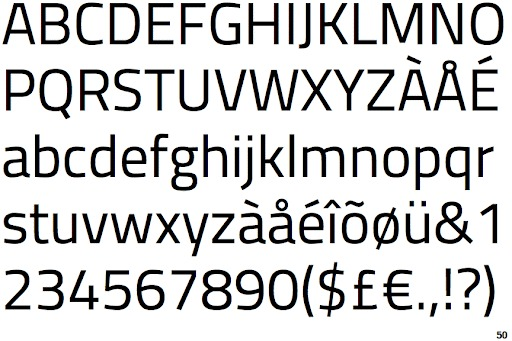

Colores
Paleta de Colores
Se eligieron colores terrosos debido a que se habla de un tema terrestre junto a rojos y oscuros que representan la advertencia que es un tópico general de la infografía.
Tipografías
Bebas Neue
Tipografía para subtítulos.

Titillium Web
Tipografía para cuerpos.